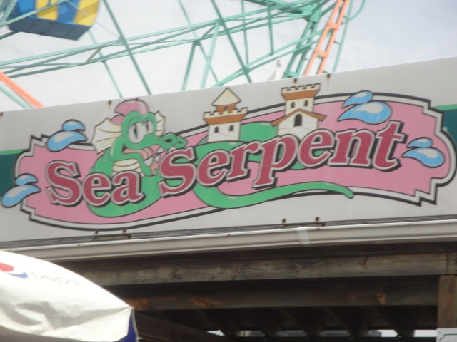

| |
Sea Serpent Review
We're here at Coney Island, or more specifically, Deno's Wonder Wheel Amusement Park (Is the entire amusement park just supposed to be Deno's Wonder Wheel, Sea Serpent, and Spookorama?). Today, we're reviewing one of the many kiddy coasters at Coney Island. Sea Serpent. After you barley squeeze in the cars, you climb up the lift hill. Then you head down the curving first drop. It's a really nice first drop (For a kiddy coaster). Then you go over the first hillm which leads straight into the kiddy turnaround. We then head through a couple teeny little bunny hops before going back to the station and going again. Nothing special. Just a cookie cutter Miler ride. But you're a credit whore, and this gets the job done. Cha-Ching.
4/10
Location: Coney Island
Opened: 1999
Built by: Miler
Last Ridden: July 28, 2011
Sea Serpent Photos

|